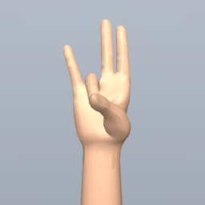
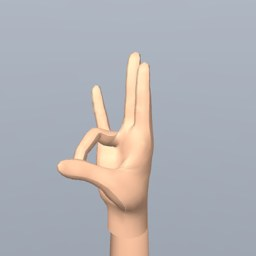
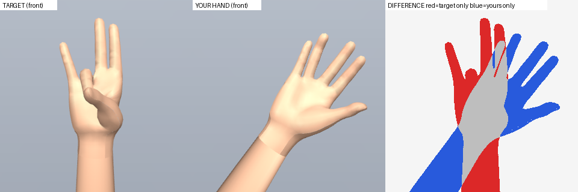

HastaBench
Can frontier models form the hand gestures of classical Indian dance with an articulated 3-D hand?
The Abhinaya Darpana describes twenty-eight single-hand gestures, the asamyuta hastas, in a sentence each. Some examples: "all four fingers extended and held together, the thumb bent" (Pataka); "the ring finger touches the tip of the thumb" (Mayura). A dancer learns them from a teacher by looking and imitating.
HastaBench asks a vision-language model to do the same. It sees reference renders of a target hasta and drives a simulated 21-joint human hand one tool call at a time. It never sees its score. The hand is physical: fingers collide, and joints and per-call movements are bounded. Every call is logged together with the hand state and a hidden score, so each episode can be replayed below.
Key findings
Solved = the hidden success test passes: mean keypoint error ≤ 10 mm, every finger ≤ 20 mm, orientation ≤ 20°, all required contacts within 5 mm and separations ≥ 8 mm, and no interpenetration. Best = the best hidden score reached at any point in the episode. Lost = best minus submitted.
The task in brief
One hand, twenty-eight shapes, sixty calls
An episode starts from a seeded random pose: fingers loosely curled and the hand turned up to 35° on each axis. The model receives two reference renders of the target (front and three-quarter) and a render of its own hand. It must first call plan. After that it may set any finger joints of one hand in a single set_fingers call (at most 45° change per joint per call), turn or move the hand, undo, describe the joint angles as numbers, and look from any of five cameras. A look returns the target, the current hand, and a silhouette difference from that camera.
The only external knowledge on offer is read_description, which returns the classical one-sentence definition and multiplies the final score by 0.94. Calls that break a rule are refused: the call is spent and the pose is unchanged.



Results
Every final pose
Each row of Figure 3 is a model and each column a hasta, hardest on the left. The top row holds the targets and the bottom rows the reference searches. A green outline means solved. Hover to enlarge; click any cell to open that episode in the replay explorer.
Where the calls go
The hidden score is logged after every call. A solid line shows the score of the current pose and a dashed line the best score reached so far. Where the dashed line sits above the solid one, the model has walked away from a better pose. Choose a model to highlight it.
Does thinking longer help?
Two models were rerun at reasoning_effort=high on all 28 hastas. In Figure 1, a line joins each model's two effort levels.
Were the moves well aimed?
Each accepted set_fingers, turn_hand, move_hand or undo counts as having helped or hurt if it moved the hidden score by more than half a point; otherwise it is neutral. The right column counts refused calls.
Why episodes fail
Percentages are of each model's unsolved episodes; one episode can fail several criteria. "Finger > 20 mm" counts episodes in which that finger's worst keypoint misses by more than 2 cm.
Do models know the gesture?
"Named" counts episodes whose plan already names the correct hasta. Scores with and without a description read are observational: the model chose whether to read.
Two hands
Samyuta hastas
Five two-hand gestures test coordination: Anjali (palms pressed together), Kapota (hollowed palms touching at the edges), Swastika and Kartariswastika (hands crossed at the wrists) and Pushpaputa (cupped palms side by side). They are scored on each hand's shape and orientation, the right hand's pose relative to the left, and the cross-hand contacts.
The two-hand IK oracle reaches 84.4 (2/5 solved). It commands the target configuration in one step from the random start, and on the way the hands can collide and lock against each other. So the two-hand targets are reachable, but not always by a single straight-line move.
Replay explorer
Watch any episode
The stage below is the simulator's own hand mesh, skinned in your browser from the logged joint angles. Drag to orbit and scroll to zoom. The timeline marks moves (blue), looks (gray), refusals (red), description reads (yellow) and the plan (black).
The environment
Hand, targets and scorer
Hand. The skin is the WebXR generic-hand rigged mesh (MIT, © 2019 Amazon). It is driven by linear-blend skinning from a MuJoCo kinematic tree whose joint positions come from the mesh's own skeleton. Each hand has 21 finger degrees of freedom: thumb CMC flexion, abduction and twist, thumb MCP and IP, and for each finger abduction plus MCP, PIP and DIP flexion. The whole hand also has 3 rotations and 3 translations. All are driven by position servos.
After every call the physics settles for 0.3 s with self-collision on, using capsules and a palm box fitted to the mesh. A finger commanded into another stops at the contact and reports "blocked by contact".
Targets. Each hasta is written as an intent pose plus explicit constraints: which surfaces must touch (for example, ring fingertip on thumb tip) and which must stay apart. A least-squares solve finds the nearest pose that meets the constraints without interpenetration. That pose is settled physically and validated automatically: 28 of 28 single-hand and 5 of 5 two-hand targets pass.
Checked against reference images (v1.1). Every target was compared, finger by finger, with at least four independent references: photos of dancers' hands, dance-school charts, Wikimedia Commons, and the plates and text of Coomaraswamy & Duggirala's The Mirror of Gesture (1917). In v1.0, four targets were wrong (Mrigashirsha, Kangula, Sandamsha and the two-hand Swastika) and twenty had small deviations; most came from a too-straight thumb in the fist hastas and from loose finger spacing. All were corrected. Sandamsha is a movement (Padmakosha opening and closing), so its target is the closed moment. The details and sources are in verify/REPORT.md. The targets have still not been reviewed by a Bharatanatyam expert.
Score. The scorer compares 20 hand keypoints (MCP, PIP, DIP and tip of each finger; CMC, MCP, IP and tip of the thumb), expressed in the hand's own frame, so translation does not matter. It also checks the hand's orientation and the gesture's contact constraints.
Here ē is the mean keypoint error, θ the orientation error, c the fraction of contact and separation constraints met, v = 1 if there is no interpenetration beyond 3 mm (otherwise 0.5), and r the number of description reads.
| Item | Specification |
|---|---|
| Stage | Five fixed cameras (front, side, top, three-quarter, back), 35° field of view, 320 px panels |
| Hand | 21 finger DOF plus 6 root DOF per hand; servo + 0.3 s physics settle per call; self-collision |
| Tools | plan · set_fingers · turn_hand · move_hand · undo · describe · look · read_description · submit |
| Budget | 60 calls, of which ≤ 20 looks and ≤ 2 description reads; the pose is submitted automatically when the budget runs out |
| Per-call limits | 45° per joint, 45° per rotation axis, 10 cm per translation axis; plan before the first move; refusals consume a call |
| Context | The two target images, the start render and the 3 most recent looks stay in context; older looks are replaced by a placeholder |
| Solve criterion | Mean keypoint error ≤ 10 mm, every finger ≤ 20 mm, orientation ≤ 20°, all constraints met, valid |
| Targets | 28 asamyuta + 5 samyuta, solved and validated automatically (data/targets_v1, data/samyuta_v1) |
| Models | Default reasoning effort, one episode per hasta at seed 0, via an OpenAI-compatible proxy |
Reference baselines
Hands at rest submits the start pose. Average-hasta prior uses the mean finger configuration of all 28 targets at the target's orientation (featureless, but it is given the orientation). CMA-ES on silhouettes searches 2,000 poses using only skin-silhouette IoU against the two target images. Blind CMA-ES on hidden score searches 2,000 poses scored by the hidden scorer, which no model can query. IK oracle commands the solved target configuration (privileged upper bound).
Limits
One episode per model and hasta, so close ranks are not resolved; the 95% intervals are bootstrap intervals over hastas. The targets were checked against reference images but not by an expert, and several hastas have regional variants (for example the Arala thumb or the Chatura fingers); each target encodes one common form. Only default reasoning effort was run. The hand's joint limits are generic, not dancer-specific. There is no human baseline yet.